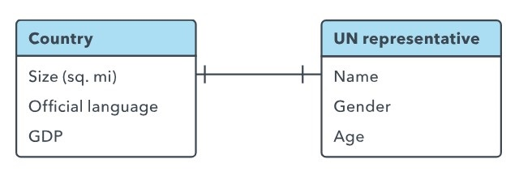
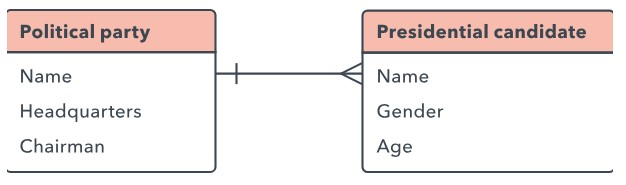
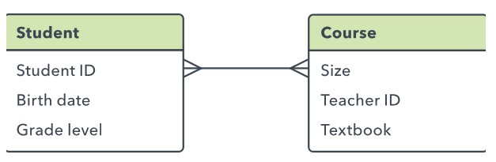
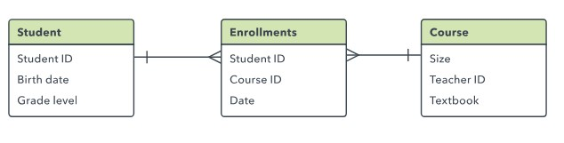

5. Creación de relaciones entre entidades
Cuando tus tablas de base de datos se conviertan en tablas, estarás listo para analizar las relaciones entre esas tablas. La cardinalidad se refiere a la cantidad de elementos que interactúan entre dos tablas relacionadas. Identificar la cardinalidad te ayuda a asegurarte de que has dividido los datos en tablas de la forma más eficiente.
Cada entidad puede, potencialmente, tener una relación con todas las demás, pero por lo general esas relaciones pueden ser de uno de tres tipos:
Relación uno a uno:
Si hay una única instancia de la Entidad A para cada instancia de la Entidad B, se dice que tienen una relación de uno a uno (a menudo se escribe 1:1). Puedes indicar este tipo de relación en un diagrama ER mediante una línea con un guion en cada extremo:

Relación uno a muchos
Estas relaciones suceden cuando un registro de una tabla está asociado a múltiples entradas en otra tabla. Por ejemplo, un solo cliente puede haber solicitado múltiples pedidos o una persona haberse llevado muchos libros de la biblioteca a la vez. Las relaciones uno a muchos (1:M) se indican con lo que se denomina "notación patas de gallo" como en el siguiente ejemplo:

Relación muchos a muchos:
Cuando múltiples entidades de una tabla se pueden asociar a múltiples entidades de otra tabla, se dice que tienen una relación de muchos a muchos (M:N). Esto puede suceder en el caso de estudiantes y clases, ya que un estudiante puede inscribirse en muchas clases, y una clase puede tener numerosos estudiantes.
En un diagrama ER, estas relaciones se representan con estas líneas:

No es posible implementar directamente este tipo de relación en una base de datos. En cambio, debes dividirlo en dos relaciones uno a muchos.
Para ello, debes crear una nueva entidad entre esas dos tablas. Si la relación M:N existe entre ventas y productos, quizás llames a esa nueva entidad "productos vendidos", ya que mostraría los contenidos de cada venta. Tanto las tablas de ventas como de productos tendrían una relación 1:M con "productos vendidos". Esta clase de entidad intermedia se llama "tabla de enlaces", "entidad asociativa" o "tabla de unión" en diversos modelos.
Cada registro de la tabla de enlaces se correspondería con dos de las entidades de las tablas contiguas (también puede incluir información adicional). Por ejemplo, una tabla de enlaces entre estudiantes y clases podría verse así:

Referencia:
lucidchart. (2019 Lucid Software Inc.). Tutorial de estructura y diseño de bases de datos. 19-04-2019, de lucidchart Sitio web: https://www.lucidchart.com/pages/es/tutorial-de-estructura-y-diseno-de-bases-de-datos